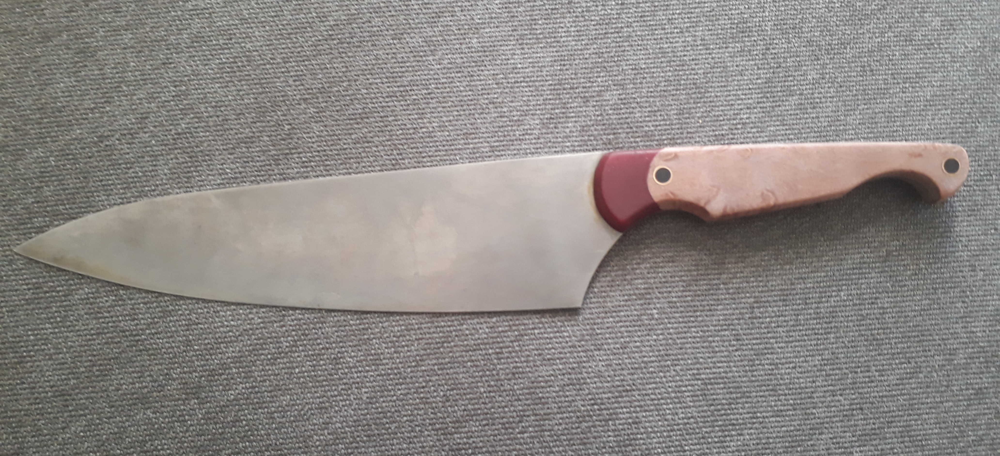

My home is Nottingham, UK.
I’m an aspiring web designer with a passion for art and design. I have worked in a variety of creative jobs over the years and am hopeful that the skills I have accrued may be transferable to the process of building fantastic looking websites.
I’ve always loved working with my hands and creating things. In my free time I make kitchen knives.
I am serious about becoming a web developer and working in tech. I can't wait to improve my skills and start applying for jobs once I am a competent developer. I want to master the process of building web sites and increase my knowledge, skills and abilities in:
Initially I’d like to work for a web design firm in order to improve my skills and become an excellent developer. After gaining some years experience in the industry I would also be interested in working remotely as a freelancer in order to travel or live abroad.